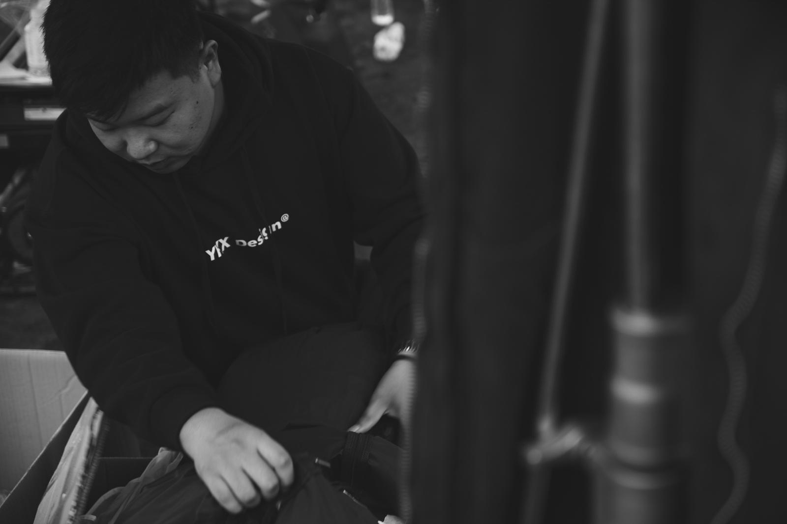

Hi, I’m Tianhao Wang.
Selected work
Four projects, 2025

Eunoia
A screen-free garment designed to ease anxiety in older adults
I surveyed 30 older adults, then built a working garment that guides a body scan with light, air, and vibration.
Read the case
Wonderorb
A soft play orb for children with touch sensitivity
Task success dropped from 60% in a simple room to 40% in a home-like room. The room itself seemed to get in the way.
Read the case
Fadence
A bedtime wearable that answers racing thoughts with warmth, then a soft pulse
See the project
Nature Designer
Exploring how mycelium and slime molds can generate form and structure
See the projectExperience
-
Shandong Jovision Technology
Interaction Design Intern, AI Companion Robot
Jun to Sep 2025
Designed the look and feel of an AI companion robot for children: form, color, materials, and surface details. Worked with engineers on sensor and speaker placement, and took the design from sketches to 3D models to a working prototype.
Read the summary -
MIAMING DESIGN
Racing Visual Design Intern
Jan to Mar 2026
Created visual concepts for 10 racing helmets and 2 vehicle liveries for racing clients.
-
Independent Fashion Studio, Beijing
Design Assistant
Jul to Oct 2023
Built mood boards, sketched garments, sampled fabrics and trims, and helped make patterns and samples for a collection.
About
I'm a first-year M.S. student in Experience Design at Northeastern University in Boston.
Before that, I studied fashion design at Wuhan Textile University for four years. Fashion taught me how materials feel and how things sit on the body. Now I design products that people wear and touch, and I build prototypes with sensors and code to test my ideas.
Awards
- Excellence Award, Hempel Award: 32nd China International Young Fashion Designers Contest (Reconstruction of Oracle Bone)2024
- Bronze Award (Provincial), “Internet+” College Students’ Innovation and Entrepreneurship Competition (Smart Pregnancy Care)2025
- Best Color Coordination Award, Huanghelou Cup Fashion Design Competition2024
- Excellence Award, Beijing Qipao Design Competition2021

Before product design
Fashion and craft
Four years of fashion training shaped how I see material, color, and the body.
See the fashion work
Contact